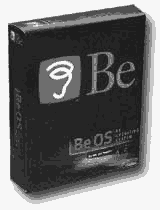
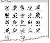

|
|
| 当前位置：电脑报电子版 > 1999 年 > 44 期 > 软件世界 > 小荷才露尖尖角——小巧的多媒体操作系统BeOS |
| 《 小荷才露尖尖角——小巧的多媒体操作系统BeOS 》 |
| IT是一个永不平静的大海，每天都有新的事物产生，但是在操作系统方面似乎一直波澜不惊，微软已经非常稳固地占有多年的统治地位了，不过Linux已经发出了向windows的挑战，并且还有新的竞争对手加入，这就是 BeOS。如果说Windows是一个大猩猩，Linux 是一只企鹅，那BeOS就是一只变色龙了。但是BeOS的发展非常迅速，因为它的确有自己的独到之处。 Be公司（www.be.com）是由Jean－Louis Gassée于1990年创办的一家软件公司，该公司一直在致力于开发用于数字媒体应用和互联网应用的操作系统,全力消除存在于当前电脑结构中的限制,开发出性价比更高的、能够同时满足个人电脑和互联网应用的数字媒体应用软件。BeOS也就是这样一个典型的产品。 “让我们无处不在”是Be公司的口号。他们一直在努力让BeOS成为那些个人数字媒体制作者、互联网应用软件和工具开发者的首选操作系统！现在推出的最新版本是V4.5版本（如图1），性能上又有了很大的提高。同其他现有操作系统面向企业生产应用的设计目的不同的是，BeOS是针对声音、视频、动画应用以及宽带交流应用优化的操作系统。他们的目标是争取让BeOS作为数字媒体和互联网应用的标准。BeOS为应用开发者提供了一个完美的环境进行基于互联网的数字媒体应用程序的创建和发布，相信互联网和其应用服务的高速发展将给BeOS带来巨大的商机。 真正的多媒体操作系统 我们说BeOS是第一个真正的多媒体操作系统(Media OS)，因为它具有很好的处理3D图形、声音和视频的能力。在最初的阶段该操作系统的设计是针对powerPCs的需要进行的，因为BeOS的设计充分发挥了硬件功效。它到处都体现出多线程的设计思路。一个单线程是指电脑执行的程序的一个部分。在多处理器系统里，不同的线程可以由不同的处理器来执行，这样就使得整个系统运行速度非常快。Windows 9x不支持多处理器，只有Windows NT才可以，不过一般用户使用并不普遍，因此不是所有的程序和任务都可以通过多处理器来执行，为NT设计的多线程软件在双处理器的系统上就不能够达到2倍的运行速度，因为分配给操作系统的任务并非全部都是多线程设计的。现在运行在BeOS下的程序再也不会受到操作系统的限制了，在一个使用BeOS的单处理器系统中增加一个处理器就会得到两倍于原来的速度。实际上，BeOS可以使用多个处理器——最近带有10个处理器的BeOS系统也出来了，尽管现在大多数的主板还只能支持双处理器。目前这样的高端设备的吸引力还没有消减，而Be公司已经把注意力集中到了扩展对低端系统的支持上，使得它能够在基础配置电脑上运行。新版本的BeOS可以运行在PⅢ和绝大多数以前的机器上。鲜明的特色 做为数字媒体应用和网络应用的操作系统。BeOS可以充分发挥数字媒体应用程序的性能，使其能够运行在范围广泛的设备上，像互联网设备、桌面电脑和高性能多处理器工作站等。BeOS的特点，概括说来就是简单、迅速、可靠、性能强大：1.繁多的功能 既能够满足动态数字媒体和应用程序的要求，又不会增加用户的预算、不会打乱时间安排和不会使你失去耐心，BeOS是第一个也是唯一一个能够在普通低价位桌面电脑上提供高速、处理功能强大以及性能稳定的高端多媒体平台的操作系统。 基于全新的计算机理念，BeOS的设计目标是在标准的PC系统上满足现在数字媒体对更高的处理性能和内存的要求，同时不会造成速度下降或者系统崩溃的情况。你可以同时运行声音、视频、图形和基于网络的应用程序以及编辑上千兆大的文件。BeOS能够通过进行扩展来满足你的需要。多增加一个处理器就会得到提高将近一倍的性能和效率。实际上，BeOS是唯一能够全部发挥处理器功效的操作系统——从1个到8个——全部自动进行处理，不需要用软件进行重配置。 2.奇快的速度 BeOS能够在20秒内启动完毕，并且软件的装载速度是前所未见的，系统反应几乎不需要等待。所有的操作在任何时候都是可用的；执行新命令的时候不需要等待另外命令的完成。你可以同时做到，运行软件切换窗口上网。 3.可靠 在Windows中，某个应用程序崩溃后你就不得不等待系统重启动，或者进行重新配置后再运行。在BeOS中，每个应用程序都在自己分配的内存空间中运行。因此如果某个程序崩溃了，系统和其他程序不会受到影响。只需要重新启动崩溃的程序就可继续运行了。你自己也可以想像这要节约多少时间。 无论你当前运行的是Windows、Mac OS或者Linux，都可以在普通的桌面电脑和笔记本电脑上另外安装BeOS。在启动的时候，通过启动管理器选择要加载的系统是哪个。这并不复杂。你可以读取和拷贝来自其他系统的文件，因为BeOS能够识别普通文件类型和磁盘格式。 4.迅速 安装BeOS只需要花费15分钟或者更少的时间，再回答一些很少的问题，系统会自动识别机器的硬件类型和网络配置。重新启动机器后，你会看到熟悉的文件夹、下拉式菜单以及对话框，不需要再去学习什么东西，因为所有的这些你都懂。(如图2)BeOS已经安装了和TCP/IP相同的本地通讯协议，因此你可以毫不费力地立即连接上网。邮件和浏览器服务都是内建的，不过可以用别的相关软件来代替。 BeOS允许用户同时操作多个声音、视频、图形进程以及基于网络的软件应用程序，而且系统状态、媒体品质和处理器性能都将保持稳定。BeOS为那些专业使用者和狂热者进行开发应用程序和内容提供了一个快速简单的高性能的环境，而且能够把新技术非常方便地融合进来。 不能回避的弱点 当然BeOS还远远不是十全十美的，它现在最大的弱点就是得到的第三方支持太少，这对于一个操作系统来说是致命的弱点。现在运行在BeOS上的软件多是媒体应用软件，视频处理、声音合成编辑、动画制作渲染等占了相当大的比例，而办公类和游戏类的软件少得可怜。这样的情况继续下去会失去大量顾客的支持。因此BeOS要想在激烈的市场上立足发展就必须不断的发展，使自己获得更多软件的支持！目前还没有主要的IT厂商支持BeOS，但也有一些厂商采取了行动。Netscape Communicator的BeOS版本正在开发当中，它是以Communicator 5开放的源代码为基础的。Cannon也在开发喷墨打印机的BeOS驱动程序，这是第一家主要的周边设备制造商想要使它们的产品与BeOS相容。不过包括AST和IDot.com在内的几家厂商，已经开始在新的个人电脑中搭售BeOS。Be公司也想要把BeOS装配到其他的设备中去，比如电视的机顶盒。 有竞争才会有发展。我们希望在操作系统上BeOS会以它独特的魅力获得相应的地位。我们不希望看到只有一个大猩猩在跳跃，有更多的企鹅和变色龙，世界才会丰富多彩。 (乔丹) |
| 下载本期推荐软件 | 页 首 |
| 《电脑报》版权所有，CPCW网站编辑部设计制作发布 |